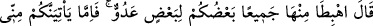
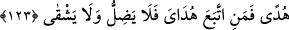

delillerle Mûsâ (a.s.)’ a galip geldi.” demektir. Çünkü Hz. Âdem yaptığını Allâh’ın
ilmine havâle etti. Onun (Hz. Mûsâ’nın) asıl olan Allâh’ın önceden tesbit ve tayin ettiği
kaderden habersiz olduğuna ve sadece ayrıntı olan zâhir sebebe baktığına dikkat çekti.
Bazı rivâyetlerde şu cümle de ilâve edilmiştir: “Âdem: “Ben yaratılmadan kaç sene
evvel (Allâh’ın kudret eliyle) Tevrât’ı yazılmış buldun?” dedi. Mûsâ (a.s.): “Kırk yıl
önce.” diye cevap verdi. Âdem (a.s.): “Onda ‘Allâh’ın rasûlü (Âdem) isyan etti.’
yazılmış mıydı?” dedi. Böylece Âdem, Mûsâ’ya getirdiği delil ile üstün geldi.”[115]
Hâfız der ki:
Ey âbid kişi, kalender-meşreb olanları ayıplama
Çünkü başkalarının günâhı sana yazılmaz korkma!
“Ben iyiyim, sen kötüsün” laflarını bırak, kendine bak!
Herkes ektiğini biçer doğrusu budur el-Hak.
Yine o şöyle der:
Beni bu çemende kendiliğinden yetişmekle kınama
Beni nasıl yetiştirirlerse ben öyle biterim
Yine o şöyle der:
Mestûrluk ve mestlik nakşı benim ve senin elinde değil,
Ezel Sultanı’nın ‘Ol’ dediği şeyi yaptım.
Yine o şöyle der:
Ey hakîm, rindlik ve kötü nam sebebiyle beni ayıplama.
Çünkü ilâhî taksim dîvânından bana kısmet bu oldu
Yine o şöyle der:
Ben gerçi âşığım, rindim, mestim ve defterim siyah
Bin şükür ki gönül şehrimin dostları günahsızdırlar
123. Dedi ki: “Birbirinize düşman olarak hepiniz oradan (cennetten) inin! Artık
benden size hidâyet geldiğinde, kim benim hidâyetime uyarsa o sapmaz ve bedbaht
olmaz.”